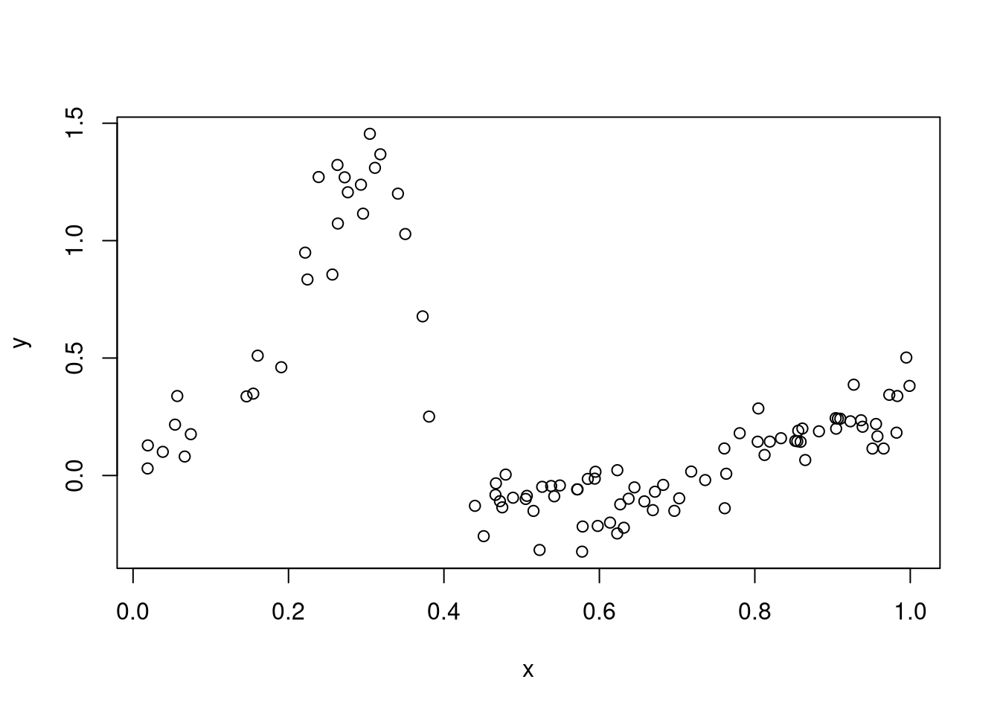
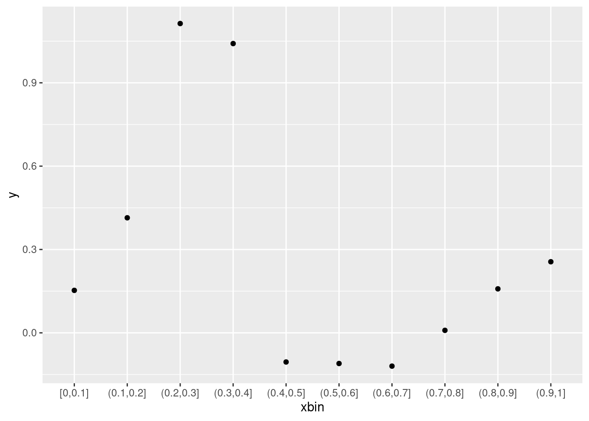
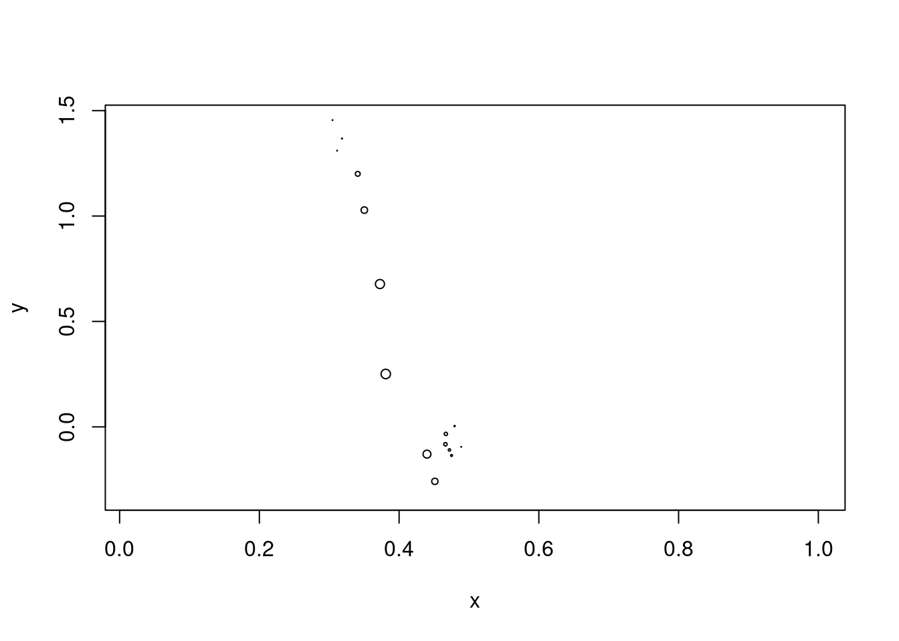
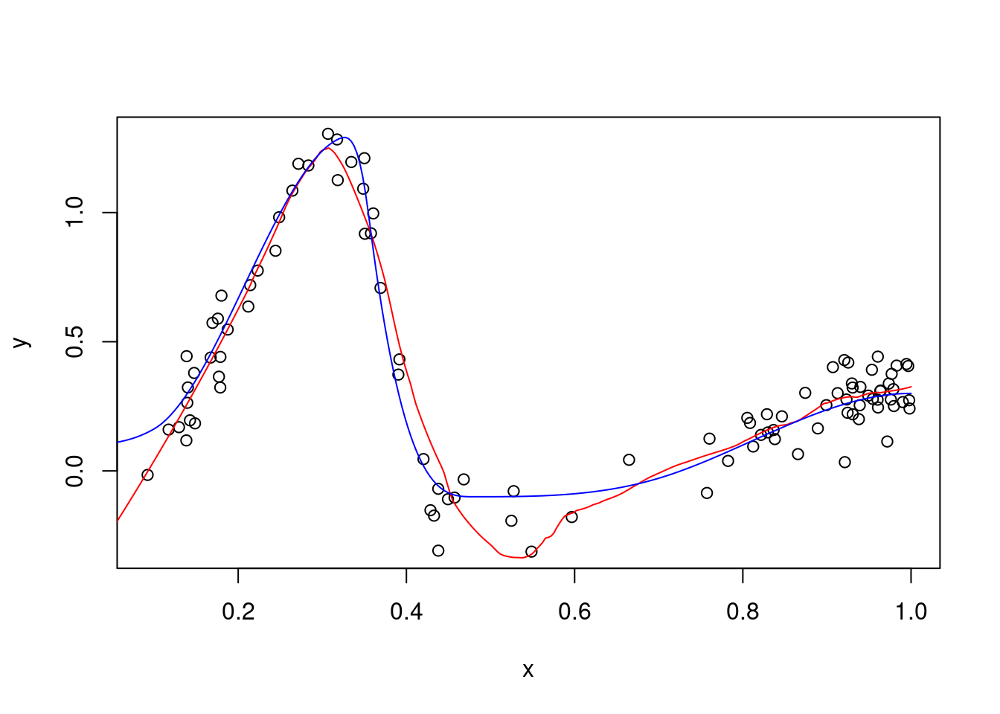
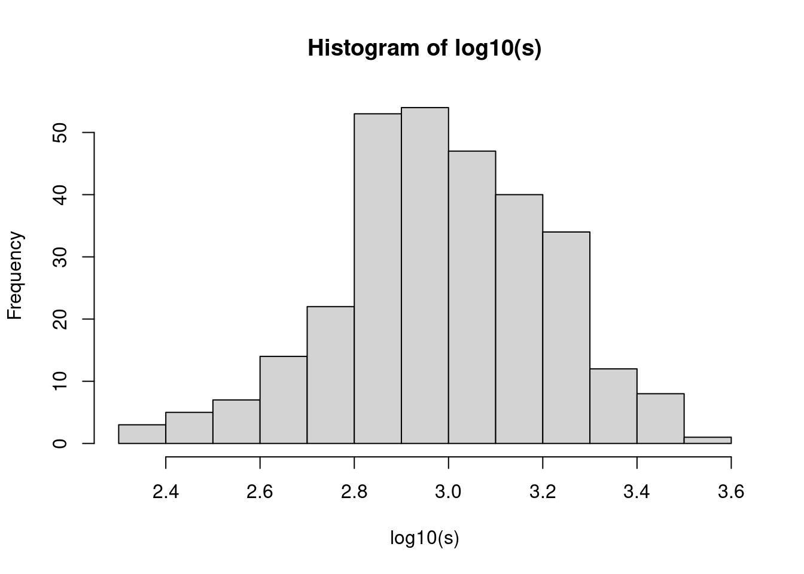
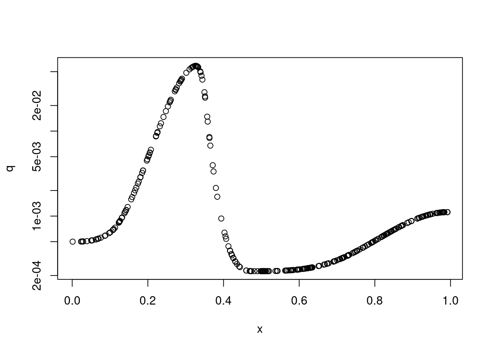
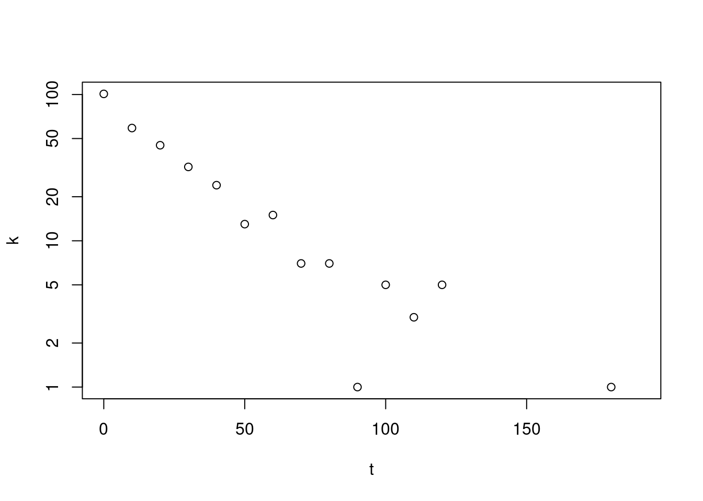

The following code produces a function whose graphs shows several ups and downs. Don’t pay to much attention on how the function works; just look at its graph.
Let’s assume, we have some complicated apparatus or some complex system, which responds to some input or stimulus with an output or response governed by this function. Unfortunately, the measurement of the response is very noisy, and we have measurements only for a limited number of stimulus values.
Here’s the 100 stimulus values:
n <-100set.seed( 13245769 )x <-runif( n )
And here’s the measured responses:
y <-true_function( x ) +rnorm( n, sd=.1 )
This is how our data looks like:
plot( x, y )

Can we reconstruct the original function from this noisy data?
Binned means
The simplest idea would be to bin the x-values and calculate for each bin of x values an average of the y values, e.g. one average of the y values corresponding to the x-values x from 0 to 0.1, one average for x between .1 and .2, etc.
suppressPackageStartupMessages( library( tidyverse ) )tibble( x, y ) %>%mutate( xbin =cut_width( x, .1, center=0.05 ) ) %>%group_by( xbin ) %>%summarise_all( mean ) %>%ggplot() +geom_point( aes( xbin, y ) )

Kernel smoothing
The hard cuts might introduce artefacts. An alternative is the following:
To get a smooth \(y\) value for a given value \(x_0\), calculate a weighted mean of the \(y\) values, where the weight depends on the distance \(x-x_0\) and is 0 for distance larger than some “smoothing bandwidth” \(h\):
\[ f_\text{sm}(x_0) = \frac{ \sum_i y_i w_i }{\sum_i w_i}, \] where the weights depend on some “kernel function” \(f_\text{K}\) as \[ w_i = f_\text{K}\left(\frac{x-x_0}{h}\right).\]
There are many choices for kernel functions. Wikipedia lists the popular ones.
A kernel function should be symmetric \(f_\text{K}(x)=f_\text{K}(-x)\), have a single mode at 0, be continuous, perhaps also differentiable, and small or even zero for \(|x|>0\). We use the tricube kernel \[ f_\text{tc}(u) = \left\{ \begin{align}
\frac{70}{81} \left(1-|u|^3\right)^3 \qquad & \text{for } |u| \le 1
\\
0 \qquad & \text{otherwise}
\end{align} \right.\]
The prefactor merely ensures that the function has a unit integral. As we divide by the weight sum anyway, we don’t need it:
For comparison, we have added to the smoothing curve (red) the true function (blue), from which we had sampled our data.
Bandwidth choice
Experiment a bit with values for \(h\), the kernel width (also called the “smoothing bandwidth”).
How to choose a good value? What’s the trade-off?
Local regression
(also known as “LOESS smoothing” or “LOWESS smoothing”, for “locally estimated/weighted scatterplot smoothing”)
In the curves above, the smoothed line has difficulties following the steep decent in the middle. This is because a kernel smoother cannot “sense slope”.
Before, we have calculated a weighted average to get a smooth \(y\) value for a given point \(x_0\). Now, we will perform a weighted regression at this point.
Let’s choose \(x_0=0.4\) and look at the weights by making a scatter plot
using points with weight-proportional area:
x0 <- .4w <-tricube( ( x - x0 ) / .1 )plot( x, y, cex=w )

Let’s fit a regression in line into with plot. We use the fact that the lm function accepts weights.
fit <-lm( y ~ x, weights=w )fit
Call:
lm(formula = y ~ x, weights = w)
Coefficients:
(Intercept) x
4.201 -9.521
Here, lm has now maximized the weighted sum of squared residuals,
\[ \frac{\sum_i w_i ( \hat y_i - y )^2}{\sum_i w_i}, \qquad \text{with } \hat y_i = \hat a + \hat b x_i, \] where \(\hat a\) and \(\hat b\) are the fitetd coefficients (intercept and slope), reported by
coef(fit)
(Intercept) x
4.200663 -9.521193
and \(w_i\) are the weights, calculated as above.
Let’s put the regression line into our plot, in orange, together fith the fitted value at point \(x_0\) (in red) :
Here, switching from simple kernel smoothing to local regression did not make that much of a difference but sometimes, it helps a lot.
Higher-order local regression
Of course, instead of fitting a regression line, we could have fitted a parabola. This is quickly done, by adding a quadratic term to the regression
local_quadratic_regression_smooth <-function( x0, x, y, h ) { w <-tricube( ( x - x0 ) / h ) fit <-lm( y ~ x +I(x^2), weights=w )coef(fit)[1] + x0 *coef(fit)[2] + x0^2*coef(fit)[3]}
The bandwidth is too large where the points are dense and too narrow where they are sparse.
Adaptive bandwidth: Always choose \(h\) such that a fixed number of x values are within the kernel window.
local_quadratic_regression_adaptive_smooth <-function( x0, x, y, hn ) { ds <-sort( abs( x - x0 ) ) h <- ds[hn] w <-tricube( ( x - x0 ) / h ) fit <-lm( y ~ x +I(x^2), weights=w )coef(fit)[1] + x0 *coef(fit)[2] + x0^2*coef(fit)[3]}plot( x, y )lines( xg, sapply( xg, local_quadratic_regression_adaptive_smooth, x, y, hn=30 ), col="red" )lines( xg, true_function( xg ), col="blue" )

Locfit
In R, all this, and more, is available via the loess function (part of base R) or the locfit package. Our implementation above is, of course, very simple and slow, so better use these functions.
Here, we specified in the loess call that we want local regression with quadratic polynomials, with an adaptive bandwidth as given by span (which specified the number of points put under the kernel as fraction of the total number of data points).
It seems that the “loess” function gives a slightly better result than our simple implementation. Maybe it knows an additional trick?
Uncertainty estimation
Bootstrapping
Usually, we do not know the “true” function. So, how can we judge how good it is?
Bootstrapping offers a way.
Bootstrapping means to replace the data with new data which is obtained by drawing observations, i.e., \((x,y)\) pairs, from the data, with replacement. Doing this many times provides a distribution of possible alternative fits.
Above, the noise was Gaussian (normal). In our single-cell data, it is Poissonian. Furthermore, we would like to calculate the curve on the log level, while properly dealing with zeroes.
We construct example count data from our curved function.
Let’s use a few more data points this time:
n <-300
Let’s sample predictors. We call them x, as before, even though t might be appropriate, too, as in out real-data example, the x axis was pseudotime.
set.seed( 13245768 )x <-runif(n)
First, we need cell sizes (count totals per cell). We draw them from a log normal:
s =round( exp( rnorm( n, log(1e3), .5 ) ) )hist( log10(s) )

Next, we get true fractions from our true_function, which we exponentiate. We have to rescale and shift a bit to get realistic values:
true_fraction <-function(x) exp( true_function(x) *4-8 )q <-true_fraction(x)plot( x, q, log="y")

Now, we add the Poisson noise:
k <-rpois( n, q * s )plot( x, log( k/s *1e4+1 ) )
Kernel smoothing
Let’s first use a simple kernel smoother. However, for the average, we use this time not \[ f_\text{sm}(x_0) = \frac{ \sum_i y_i w_i }{\sum_i w_i}, \] as before, but \[ f_\text{Psm}(x_0) = \log \frac{ \sum_i k_i w_i }{\sum_i s_i w_i}, \] We first try it, then see why this makes sense.
kernel_smooth_Poisson <-function( x0, x, k, s, h ) { w <-tricube( ( x - x0 ) / h )sum( w * k ) /sum( w * s )}
To understand the change in the last two equations, we need a short detour:
Inverse-variance weighting
Given \(n\) independent random variables \(X_i\) with variances \(v_i=\operatorname{v_i}\), we want to estimate the expectation of their mean, \(\operatorname{E}\left(\frac{1}{n}\sum_{i=1}^n X_i\right)\), by way of estimating a weighted mean, \[ \hat\mu = \frac{\sum_iw_iX_i}{\sum_i w_i}. \] How should the weights be chosen such that the estimator’s sampling variance, \(\operatorname{Var}\hat\mu\), is minimized?
If all the estimated variances are the same, \(v_i=v\), then the weights should all be the same, too: \(w_i\propto 1\).
In general, however, the weights might differ. Then, one should choose \(\w_i\propto \frac{1}{v_i}\).
This is easily proven with Lagrange multipliers; the proof can be found on the Wikipedia page on inverse-variance weighting.
Application to Poisson variables
Let us now assume that the random variables we want to average over are fractions derived from Poisson counts. We have cells, indexed by \(i\), with counts for our gene of interest, given by \(K_i\sim \operatorname{Pois}(s_i q)\), where \(s_i\) is the “size”, i.e., the total count sum for the cell. We wish to estimate the common expected fraction \(q\) via teh weighted average \[ \hat q = \frac{\sum_iw_i\frac{K_i}{s_i}}{\sum_i w_i}. \] What weights \(w_i\) should we use? Using \(\operatorname{Var} K_i=s_i q\) together with the preceding result, we get \[ w_i \propto \frac{1}{\operatorname{Var}\frac{K_i}{s_i}}=\frac{1}{\frac{1}{s_i^2}\operatorname{Var}K_i}=\frac{1}{\frac{1}{s_i^2}s_iq}=\frac{s_i}{q} \propto s_i \] Hence:
\[ \hat q = \frac{\sum_iw_i\frac{K_i}{s_i}}{\sum_i w_i} = \frac{\sum_i s_i\frac{K_i}{s_i}}{\sum_i s_i} = \frac{\sum_i K_i}{\sum_i s_i}. \] This justifies our switching from \(\frac{1}{n}\sum_i(k_i/s_i)\) to \((\sum_i k_i)/(\sum_i s_i)\) in our smoothing function.
Generalized linear models
Before proceding further, we need another detour, this time to introduce generalized linear models (GLMs) as a generalization of OLS linear models.
Example: Radioactive decay
We have measurements of the number of clicks per minute for a radioactive sample. Let’s simulate this: We count every 10 minutes for 1 minute, up to 200 minutes. The activite at t=0 is 1000 clicks/min, the half-life is 130 min.
t <-seq( from=0, by=10, length.out=20 )expected_counts_per_min <-100*2^( - t /20 )k <-rpois( length(t), expected_counts_per_min )plot( t, k )
A simple approach is to plot on a semi-log plot:
plot( t, k, log="y")
Warning in xy.coords(x, y, xlabel, ylabel, log): 6 y values <= 0 omitted from
logarithmic plot

and fit a regression line. However, the zeroes mess this up.
Here’s a better way:
We may assume that \[ k_i \sim \operatorname{Pois}( \alpha e^{\kappa t_i})\] The true values are \(\alpha = 100\) (the initial click rate) and \(\kappa = \ln 2 / 20\approx .035\) (using the half life, 20, from above).
We can find maximum-likelihood estimates for \(\alpha\) and \(\kappa\). Here is the log-likelihood for a pair of candidate values \(\alpha\) and \(kappa\):
$par
[1] 92.39194421 0.03427986
$value
[1] 40.2579
$counts
function gradient
117 NA
$convergence
[1] 0
$message
NULL
GLMs
Rewriting our model a bit, we recover the form of a “generalized linear model” (GLM). A GLM always has three components:
The response (in our case, the counts \(K_i\)) follows a distribution from the so-called exponential family (which includes the normal, the Poisson, the binomial, the gamma-Poisson, and others). Here, we have:
\[ K_i \sim \operatorname{Pois}( \mu_i ). \] (ii) The mean parameter \(\mu_i\) in that distribution is coupled with teh so-called “linear predictir$ _i$ by a function, the so-called “link function”. Here: \[ \eta_i = \log \mu_i. \] (iii) The linear predictor is a linear combination of known predictors \(x_ij\) with unknown coefficients \(\beta_j\). In general \[ \eta_i = \beta_0 + \sum_j \beta_j x_{ij} + o_i\] and here simply \[ \eta_i = \beta_0 + \beta_1 t_i, \] i.e. we have, besides the intercept \(\beta_0\), only one further coefficient, \(\beta_1\).
There are also no offsets \(o_i\). (If the time we had waited at each time point to count would not always have been the same but differed from measurement to measurement, we would have included the length these waiting times as “exposure values” \(o_i\).)
We can clearly identify how the coefficients of the GLM correspond to our parameters: \(\beta_1=-\kappa=-\ln2/T_{1/2}\) and \(\beta_0=\ln\alpha\).
If the model has this shape, the general optimizer optim that we have used above can be replaced by a GLM solver:
fit <-glm( k ~ t, family =poisson(link="log") )fit
Call: glm(formula = k ~ t, family = poisson(link = "log"))
Coefficients:
(Intercept) t
4.52600 -0.03428
Degrees of Freedom: 19 Total (i.e. Null); 18 Residual
Null Deviance: 612.2
Residual Deviance: 21.62 AIC: 84.52
We get the same result as with optim. We see this directly for the coefficient for \(t\) (i.e., \(\kappa\)), but for \(\alpha\), we have to exponentiate:
exp(coef(fit)[1])
(Intercept)
92.38863
IRLS
The glm function is faster than optim and more stable, because it uses a special algorithm known as “iteratively reweighted least squares” (IRLS) fitting.
I was too lazy to write up how this works, so I asked ChatGPT to do my work: